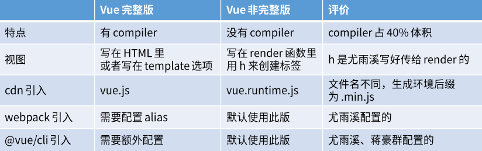

分析Vue两个版本
项目搭建
1 | yarn global add @vue/cli |
- 安装完后，可运行 vue –version 查看版本号检查是否安装成功
- 然后就可以 vue create vue-demo-1(目录名) 创建项目
- 然后会被提示选择一个preset,根据需求选择，学习的话，可选择手动选择特性
- 上下键移动，空格选中css预处理，单元测试，完成回车
- 输入N,回车，选择不作为默认preset
- 出现以下命令就成功了
- 然后 命令行 start . 打开当前目录，将项目拖进VScode
- 打开终端 运行 yarn serve
在线快速使用Vue的神器-codeSandbox
- 可以使用codeSandbox在线写vue代码，不用安装任何本地依赖
- 注意：不要登录(否则只能创建50个项目)，直接create Sandbox，选择Vue，即可
- https://codesandbox.io/s/zealous-sanderson-b9f0vh?file=/src/App.vue
如何使用Vue实例
- vue.js和vue.runtime.js的使用
- 只要从html变成页面中的东西，完整版就支持，运行时版就不支持
方法一:从HTML得到视图
- 详情看文档链接：https://cn.vuejs.org/v2/guide/installation.html
- 也就是文档里说的完整版的Vue
- 从bootCDN引用vue.js 或者 vue.min.js即可做到
- 完整版的：vue.js https://cdn.bootcdn.net/ajax/libs/vue/3.2.31/vue.cjs.js(该链接有较多注释，可用...vue.min.js)
- 也可通过import引用vue.js 或者 vue.min.js
- 代码如下
1
2
3
4
5
6
7
8
9
10
11
12
13
14
15
16
17
18
19
20-- main.js --
new Vue({
el:'#app',
template:`
<div>{{n}}</div>
<button @click="add">+1</button>`,
data:{
n:0
},
methods:{
add(){this.n += 1}
}
})
-- index.html --
// cdn引入
<script src="https://cdn.bootcdn.net/ajax/libs/vue/2.6.10/vue.min.js">
</script>方法二:用JS构建视图
- 还是看文档链接，使用vue.runtime.js(运行时版)
- 但是这种方法要比完成版更好一些，更独立
- 代码如下：
1
2
3
4
5
6
7
8
9
10
11
12
13
14
15
16
17
18
19
20
21--main.js--
new Vue({
el:'#app',
render(h){
return h('div',[this.n,h('button',{on:{click:this.add}},'+1')])
},
data:{
n:0
},
methods:{
add(){
this.n += 1
}
}
})
-- index.html--
// cdn引入
<script src="https://cdn.bootcdn.net/ajax/libs/vue/2.6.10/vue.runtime.min.js"></script>方法三：使用vue-loader
- 可以把.vue文件翻译成h构建方法
- 但这样做HTML就只有一个div#app,SEO不友好，但只需要将 title、description、keyword、h1、a写好即可，SEO就可以正常工作
- 代码如下：
1
2
3
4
5
6
7
8
9
10
11
12
13
14
15
16
17
18
19
20
21
22
23
24
25
26
27
28
29
30
31
32
33
34
35
36
37
38
39
40
41-- Demo.vue --
<template>
<div class="red">
{{ n }}
<button @click="add">+1</button>
</div>
</template>
<script>
export default {
data(){
return{
n :0
}
},
methods:{
add(){
this.n += 1
}
}
}
</script>
<style scoped>
.red{
color: red;
}
</style>
-- main.js --
import Demo from '@/components/Demo'
console.log(Demo)
new Vue({
el:'#app',
render(h) {
return h(Demo)
}
})
Vue的两个版本
- Vue有两个版本，即完整版(vue.js)和非完整版(vue.runtime.js)
- 只要从 html 里得到视图，完整版就支持，非完整版就不支持
完整版
- 完整版:同时包含编译器(compiler)和运行时的版本，可以从HTML或template直接得到视图，有compiler，可以将含有占位符或者条件语句变成真实的DOM节点，后面再修改会直接修改DOM节点无需再编译一遍，但compiler比较复杂会占用一定体积
- 编译器:用来将模板字符串编译成为JS渲染函数(render)的代码
- 运行时:用来创建Vue实例、渲染并处理虚拟DOM等的代码，基本上就是除去编译器的其他的一切
非完整版(只包含运行时版本)
- 只包含运行时版本 就只有运行时，没有compiler,不能将HTML变成节点。webpack通过vue-loader会调用compiler将html变成h(‘div’,this.n)
两个版本的区别

@vue/cli 引入的vue.js版本默认使用的是 runtime 版本
最佳实践:总是使用 runtime 版，然后配合vue-loader和vue文件
思路如下：
- 保证用户体验，非完整版(即runtime版)，用户下载的JS文件体积更小，但只支持h函数
- 保证开发体验，开发者可直接在vue文件里写HTML标签，而不是写h函数，所以需要一个compiler，开发者就能写更直观更语义化的HTML标签和template
- vue-loader就可以引入compiler,把vue文件里的HTML标签和template会在构建时预编译成h函数，这样用户和开发者都开心
- 所以应该 使用 只包含运行时版 + vue-loader引入compiler
template 与 render 的用法
1 | // 需要编译器 |
template标签和JS里的template
1 | // .vue文件中的template标签 |
All articles in this blog are licensed under CC BY-NC-SA 4.0 unless stating additionally.